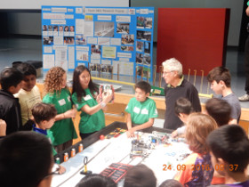
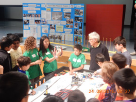
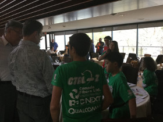
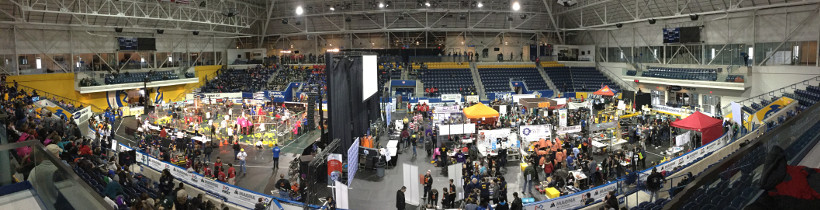
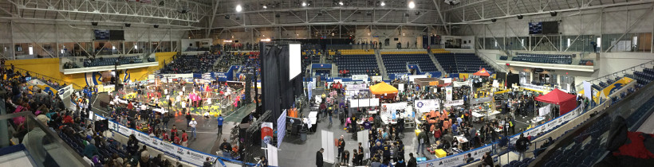

On Saturday, September 24, 2016, Ctrl-Z presented to many new and returning teams (over 120 attendees) at the FLL Animal Allies Season Kick-off and Training Event hosted at Bayview Glen School. There, the team refreshed and helped improve many enthusiasts' building, programming, and research skills. It shared various concepts, from introductory to advanced, to help other teams make the best of this year’s season.


 



On Sunday, October 9, 2016, Ctrl-Z assisted Team Mustangs 28624, a rookie team. We invited Mustangs to our school and we shared insight on how they could improve their robot and learn new concepts in order to achieve more and take more away from their experience in FLL. It was great to meet and help a fellow team who is as interested in FLL as we are. Best of luck to the team.


On October 29, 2016, Ctrl-Z presented its 2015/2016 innovative solution at the TAVES Consumer Electronics Show at the Sheraton Parkway Toronto North & Best Western Hotels in Richmond Hill, Ontario. The team's objectives were to inspire youth to develop innovative solutions, to follow their dreams in starting up new business ventures, and to raise awareness for FIRST Robotics. TAVES is said to be the place to connect with tech-savvy consumers with a taste for innovative products. Showcasing cutting-edge technology and innovation in the most exciting categories: virtual reality, drones, wearables, hearables, health & fitness, gaming, audio, home theatre, robotics, 3D printing, personal transportation, smart devices and electric vehicles – the show attracted approximately 6,500 attendees from October 28 to October 30, 2016.


On Tuesday, November 15, 2016 Ctrl-Z welcomed Team Tribe Called Tech of the First Nations School of Toronto to our school for an afternoon of learning and collaboration. Members of Ctrl-Z divided into two groups to teach the First Nations students robot design and programming. We covered the characteristics of a robust base robot and modular attachments. For programming we taught calibration, line following, and basic robot navigation. We enjoyed sharing our FLL experience and knowledge with our new Aboriginal friends. We looked forward to learning more about their culture and tradition in the coming week.


On Friday, November 25, 2016 we were welcomed by team Tribe Called Tech to the First Nations School Of Toronto. Members of Ctrl-Z enjoyed visiting the First Nations School to witness a traditional Big Circle celebration where staff and students told stories, sang songs and heard teachings about the values that are important to Aboriginal people. Ctrl-Z is very pleased to have assisted Tribe Called Tech in its Animal Allies robotics season and looks forward to continued collaboration with Tribe Called Tech even after the FLL season is over. Best of luck Apachita, Jordyn, Tallawah, Sarah, Eden, Ashton, Scarlett, Keondre, Casandra,Tyran and Ricky at your regional qualifier on December 17th!


On Saturday, November 26, 2016, Ctrl-Z volunteered at the St. Maximilian Kolbe Catholic School Regional Qualifying Tournament. Team members served as table resetters, referees, robot game queurs and more. The team was thrilled by the opportunity to help out other teams and give back to the FLL community which has done so much for it.


On Friday, December 9th, 2016, Ctrl-Z presented their research and innovative solution in front of 200 attendees from the Bayview Glen Middle School. The students were entertained by the skit and were intrigued by the prevalence of the problem we were studying. We were asked interesting questions that showed the strengths of our invention, as well as what we still had to improve upon. It was really a great learning experience for both the audience and us.


On Dec 17, 2016, our friends from Team Tribe Called Tech (FLL #21312) won Champions Award,
First Place at the 28-team TDSB FLL Regional Qualifying Tournament hosted by Woburn C.I.
We are thrilled at how Tribe Called Tech mastered all three FLL elements: research,
robot and core values, against a very strong field of competing teams. We are honored that
Tribe Called Tech and Ctrl-Z have partnered this Animal Allies season to share best practices along with culture with one another.
Ctrl-Z wishes Team Tribe Called Tech the best of luck as they advance to compete at the
Ontario East Provincial Championships on Jan 14, 2017 at the University of Ontario Institute of Technology in Oshawa, ON.


On Jan 14, 2017, at the FLL Ontario East Provincial Championships hosted by the University of Ontario Institute of Technology, the judges selected our team to perform its research project skit in front of about 750 FLL competitors, their families and friends, referees and other volunteers.

On Saturday Jan 28, 2017, Ctrl-Z spent the morning talking about FLL, as well showing our robot and the Pinder Pet finder to dozens of guests at Bayview Glen School’s open house. People were amazed at what we could accomplish as a team.
On February 23, 2017 Ctrl-Z attended the monthly investment meeting of the York Angel Investors to network with investors and observe entrepreneurs pitching to raise money for their startup businesses. The team showed their Pinder Pet Finder to certain members of the audience and generated excitement for their innovative solution amongst some of the angel investors. Finally, the team was invited to the next investment meeting, scheduled for March 30th, to formally pitch their smart collar idea and receive investors' valuable feedback.
On Mar 11, 2017, Team Ctrl-Z was invited to the FRC event hosted by Ryerson University, Toronto to be recognized as an Ontario representative at the upcoming FIRST Championships in St. Louis. At Ryerson, the Team shared its robot and research project with FRC competitors and judges and demonstrated the robot game to enthusiasts to promote FLL in the Province.
 

On March 30, 2017 Ctrl-Z was invited to attend a monthly investment meeting of the York Angel Investors in Unionville,
Ontario for a second time. At this meeting, the team formally pitched its Pinder Pet Finder innovative solution to
approximately 50 investors.
A video of the pitch can be seen below: